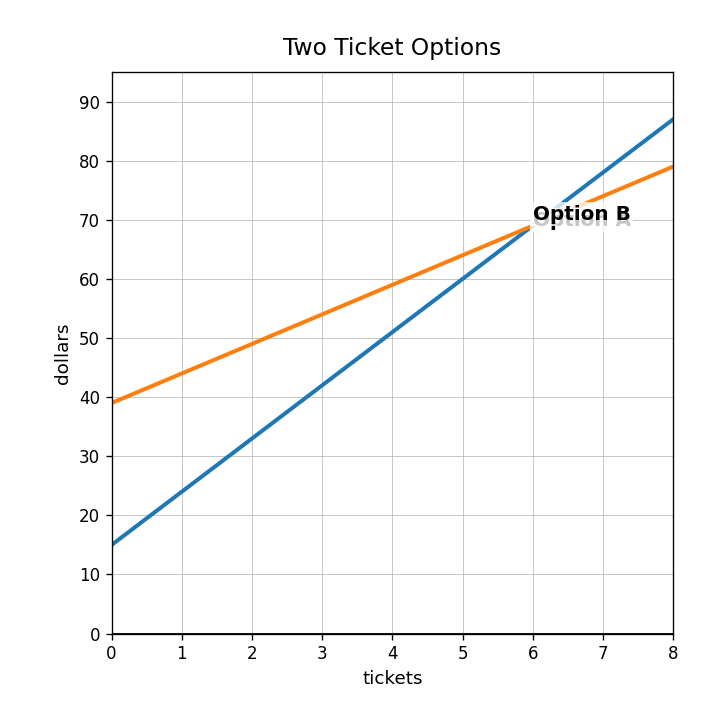
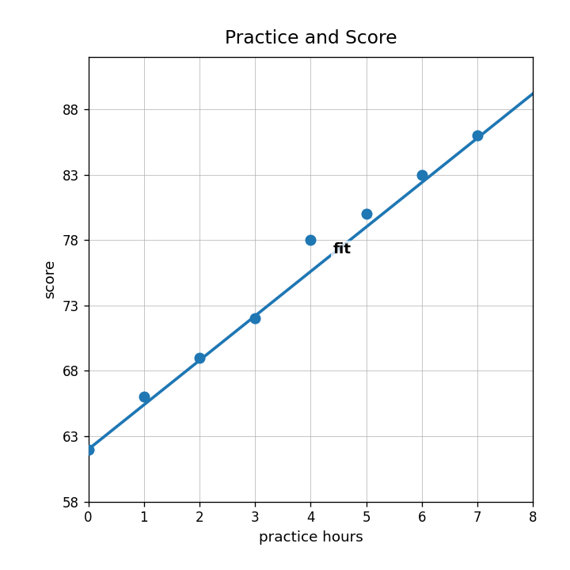
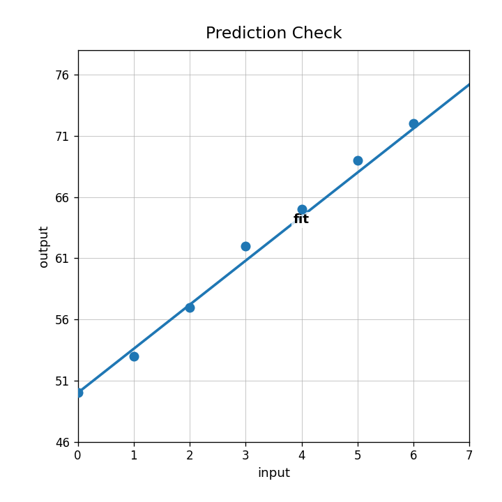

Extra Practice 3.2.4
Which substitution step correctly starts solving $y=x+3$ and $2x+y=12$?
- $2x+x+3=12$
- $2x+y+3=12$
- $y=2x+12$
- $x+3=12$
Solve the system using substitution.
$$y=x+3$$
$$2x+y=12$$
A student solves $y=x+3$ and $2x+y=12$ by writing $2x+x=12$. Identify the missing part and correct the reasoning.
Use the ticket-options graph. Write a system, solve it by substitution or equations, and explain whether the graph supports your answer.

What does the ordered pair at an intersection tell you about both equations?
What solution type is shown by two lines with the same slope and different $y$-intercepts?
Check whether $(3,5)$ satisfies $y=x+2$ and $y=-2x+11$.
Which method focuses on adding or subtracting equations to remove a variable?
Use the graph to estimate the solution to the system.

Solve using elimination.
$$4x+y=21$$
$$-4x+2y=3$$
Explain why two equations that graph as the same line have infinitely many solutions.

Design three systems: one with one solution, one with no solution, and one with infinitely many solutions. State how you know for each.
Does the practice-and-score scatterplot show a positive or negative association?

Use the prediction-check model to estimate the output when the input is 5.

A residual is $-4$. Explain what that means about the actual value compared with the predicted value.
Before using a line of fit to make a prediction, list two pieces of evidence you would check and explain why.